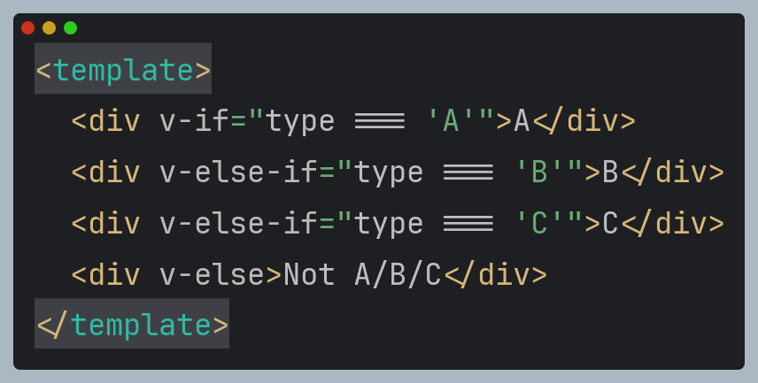

Що таке компонент Vue.js?
Компоненти — це блоки, які дозволяють нам розділити інтерфейс користувача (UI) на незалежні частини, які можна багаторазово використовувати, і думати про кожну частину окремо. Documentation.

Компоненти — це блоки, які дозволяють нам розділити інтерфейс користувача (UI) на незалежні частини, які можна багаторазово використовувати, і думати про кожну частину окремо. Documentation.
Vue.js використовує мову шаблонів, щоб визначити, як має виглядати інтерфейс користувача. Ця мова використовує комбінацію HTML, CSS і JavaScript для визначення макета та стилю програми
Компоненти — це будівельні блоки, які можна повторно використовувати в усій програмі. Ці компоненти створюються за допомогою мови шаблонів Vue.js і можуть використовуватися для створення складних, динамічних інтерфейсів користувача
Vue.js використовує мову шаблонів, щоб визначити, як має виглядати інтерфейс користувача. Ця мова використовує комбінацію HTML, CSS і JavaScript для визначення макета та стилю програми
Компоненти — це будівельні блоки, які можна повторно використовувати в усій програмі. Ці компоненти створюються за допомогою мови шаблонів Vue.js і можуть використовуватися для створення складних, динамічних інтерфейсів користувача
Ми визначаємо кожен компонент Vue у спеціальному файлі за допомогою розширення .vue, відомого як однофайловий компонент (скорочено SFC, скорочено від (англ.) Single File Component).
Одно-файлові компоненти Vue (відомі також як файли *.vue, скорочено SFC) — це спеціальний формат файлу, який дозволяє нам інкапсулювати шаблон, логіку та стиль компонента Vue в одному файл.
Як ми бачимо, Vue SFC є природним розширенням класичного тріо HTML, CSS і JavaScript. Блоки template, script і style інкапсулюють та розміщують вид, логіку та стиль компонента в одному файлі.
Найпростіший спосіб зв'язування даних — це
текстова інтерполяція з використанням
синтаксису Mustache (подвійних фігурних дужок):
Повідомлення: {{ msg }}
Вираз у фігурних дужках буде замінено значенням властивості msg відповідного об'єкта даних. Крім того, воно буде оновлено за будь-якої зміни цієї властивості (динамічно).
Значення виразу у подвійних фігурних дужках підставляється як простий текст, а не як HTML. Для HTML необхідно використовувати директиву v-html:
<p>Інтерполяція: {{ rawHtml }}</p>
<p>Директива v-html: <span v-html="rawHtml"></span></p>
Вміст тега span буде замінено значенням властивості rawHtml, інтерпретованого як звичайний HTML — усі прив'язки даних ігноруються.
Ви не можете використовувати v-html для вкладення шаблонів один в одного, тому що двигун шаблонів Vue не ґрунтується на рядках.
Натомість потрібно використовувати компоненти, що дозволяють поєднувати та перевикористовувати елементи UI.
Синтаксис подвійних фігурних дужок не працює з HTML-атрибутами. Використовуйте замість нього директиву v-bind:
<div v-bind:id="dynamicId"></div>
bind - зв'язати
При використанні булевих атрибутів (коли їх наявність вже означає true) v-bind працює трохи інакше. У цьому прикладі:
<button v-bind:disabled="isButtonDisabled">Кнопка</button>
Якщо значенням isButtonDisabled буде null, undefined чи false, то атрибут disabled не додасться до елемента <button>
Поки ми пов'язували дані з властивостями у шаблонах лише за простими ключами. Однак насправді при зв'язуванні даних Vue підтримує всю потужність виразів JavaScript:
{{ number + 1 }}
{{ ok ? 'YES' : 'NO' }}
{{ message.split('').reverse().join('') }}
<div v-bind:id="'list-' + id"></div>
<div v-bind:id="`list-${id}`"></div>
Вирази будуть обчислені як JavaScript-код у області видимості відповідного екземпляра Vue.
Єдине обмеження в тому, що допускається лише один вираз, тому код нижче не спрацює:
{{ const a = 1 }}
{{ if (ok) {return message} }}
Це спеціальні атрибути із префіксом v-.
Директива реактивно застосовує DOM зміни при оновленні значення цього виразу.
<p v-if="seen">This is vue directive!</p>
Деякі директиви можуть приймати «аргумент», відокремлений від назви директиви двокрапкою.
Наприклад, директива v-bind
використовується для реактивного
оновлення атрибутів HTML:
<a v-bind:href="url">link</a>
Іншим прикладом буде директива v-on,
яка відстежує події DOM:
<button v-on:click="doSomething">Vue button click</button>
Директива v-if використовується для умовного відтворення блоку. Блок буде відтворено, лише якщо вираз директиви повертає правдиве значення.
<h1 v-if="flag">Hello</h1>
Ви можете використовувати директиву v-else, щоб вказати «блок else» для v-if:
<button @click="flag = !flag">>Click</button>
<h1 v-if="flag">Hello!</h1>
<h1 v-else>Bye!</h1>
Служить «блоком else if» для v-if. Можна прив’язувати кілька разів:
Іншим варіантом умовного відображення елемента є директива v-show. Використання в основному однакове:
<h1 v-show="show">Hello</h1>
Різниця полягає в тому, що елемент з v-show завжди відображатиметься та залишатиметься в DOM; v-show лише перемикає властивість CSS відображення елемента.
Використовуйте директиву v-for для відображення списку елементів на основі масиву даних.
Директива v-for має особливий синтаксис запису: item in items, де items — вихідний масив, а item — посилання на поточний елемент масиву.
Замість in роздільником можна використовувати of, як в ітераторах JavaScript
Коли присутні разом на одному елементі. Проблема тут виникає через те, що ви намагаєтесь отримати доступ до властивості isComplete у межах циклу v-for та умови v-if разом, що може створити деякі проблеми, якщо todos не повністю відображено або має невизначені значення.
Більш надійний спосіб впоратися з цим полягає в тому, щоб переконатися, що масив належним чином повторюється та фільтрується перед рендерингом.
Використання <template>